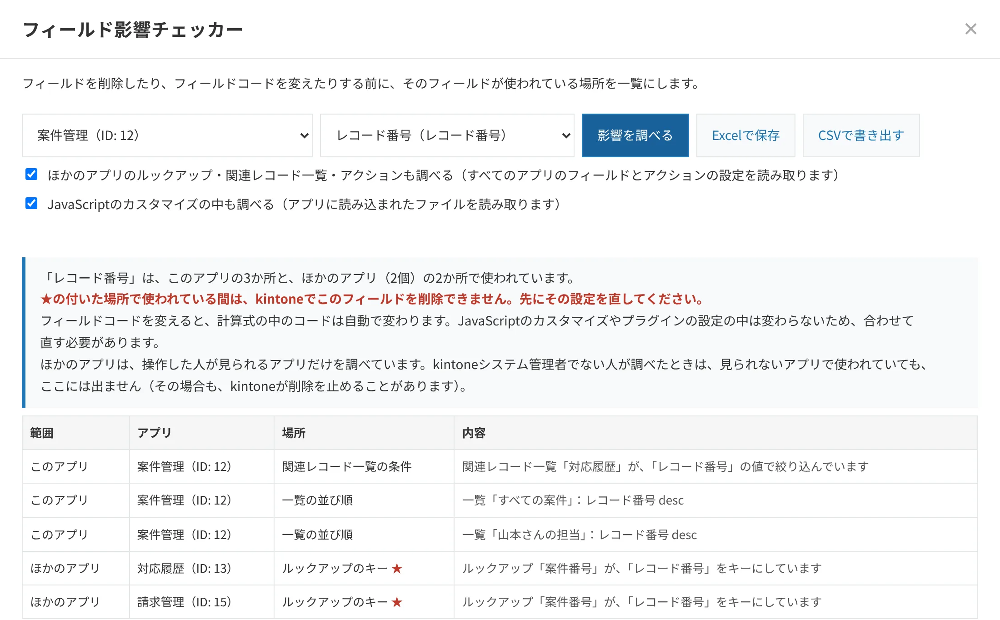

フィールド影響チェッカー
無料フィールドが使われている場所を、一覧に。
フィールドを削除したり、フィールドコードを変えたりする前に、そのフィールドが使われている場所を一覧にします。このアプリの中の設定に加えて、ほかのアプリのルックアップ・関連レコード一覧・アクションも調べます。
- ずっと無料・人数制限なし
- 保存：Excel・CSV
- データは外部に送信しません


こんなときに
- フィールドを削除しようとしたら「ルックアップから参照されている」というエラーが出たが、どのアプリのどのフィールドなのか分からない
- 使っていないように見えるフィールドを整理したいが、計算式や一覧の条件、通知で使われていないか心配
- フィールドコードを分かりやすい名前に変えたいが、JavaScriptのカスタマイズが動かなくならないか確かめたい
できること
- 選んだフィールドが使われている場所を、このアプリとほかのアプリに分けて一覧で表示
- 使われている間はkintoneがフィールドの削除を止める設定（ほかのアプリのルックアップ・関連レコード一覧、プロセス管理の作業者）に★
- テーブルを選ぶと、テーブルの中のフィールドもまとめて調べる
- ExcelとCSVで保存。Excelの先頭には結果のまとめの1文が入り、削除を止める設定の行を黄で示します
調べる場所
| このアプリの中 | 計算式、ルックアップのコピー先、関連レコード一覧の条件、一覧（表示項目・絞り込み・並び順）、グラフ、アクセス権（レコードの条件・フィールド・ユーザー選択などで指定した人）、プロセス管理（作業者・条件）、通知（条件・日時・通知先）、アクション、レコードのタイトル、JavaScriptのカスタマイズ |
|---|---|
| ほかのアプリ | このアプリを参照するルックアップ（キー・コピー元・選択画面・絞り込み・並び順）、関連レコード一覧（条件・表示項目・絞り込み・並び順）、このアプリにレコードを作るアクションのコピー先 |
プラグインの設定の中は調べません。JavaScriptは、フィールドコードが文字列として書かれている場所を見つけます（URLで読み込んでいるファイルは調べません）。
使い方
- ボタンを押すアプリの一覧画面の上にある「フィールドの影響」を押します。
- フィールドを選ぶアプリとフィールドを選んで「影響を調べる」を押します。★の付いた設定から先に直します。
- 保存する「Excelで保存」で、フィールドの影響_フィールド名_日付.xlsx が保存されます。
導入方法
- 下の「ダウンロード」から、プラグインのファイル（zip）を保存します。zipは展開せず、そのまま使います。
- kintoneの歯車アイコンから「kintoneシステム管理」を開き、「プラグイン」の「読み込む」でファイルを読み込みます。
- どれか1つのアプリの「アプリの設定」→「プラグイン」で「台帳屋 フィールド影響チェッカー」を追加し、「アプリを更新」を押します。
- 一覧画面の上に「フィールドの影響」ボタンが出ます。1つのアプリに追加すれば、ほかのアプリのフィールドも調べられます。
動作環境
| 対応コース | スタンダードコース・ワイドコース |
|---|---|
| 導入する人 | kintoneシステム管理者 |
| 利用する人 | 調べたいアプリの管理権限を持つユーザー（ほかのアプリは、閲覧や管理の権限があるものだけを調べます） |
| 画面 | パソコン版の一覧画面（動作確認はGoogle Chrome） |
| 通信と書き込み | kintone環境とのみ通信し、設定やレコードは変更しません（導入前の確認事項） |
ダウンロード
ダウンロード（v1.2.0・zip・26KB）
ファイルの確認用（SHA-256）：f21f6c0c015179999324d502dc0ac40c9a37262e02295ae250425fcd226b065e
ご利用の前に利用規約をお読みください。
困ったときは
- 「権限がありません」と表示される場合は、そのアプリの管理権限を持つユーザーが操作してください。
- アプリが多い環境では、ほかのアプリを調べるのに数分かかることがあります。
- ゲストスペースのアプリには、現在対応していません。
- そのほかの不具合やご要望は、daichoya.plugins@gmail.com までお知らせください。
- 関連するガイド：kintoneでフィールドを削除・変更する前に、使われている場所を調べる方法
更新履歴
1.2.0（2026年11月6日）：Excelの先頭に、結果のまとめの1文（使われている場所の数と、kintoneが削除を止める設定の件数）を入れました。
以前の更新
- 1.1.0（2026年11月5日）：「Excelで保存」を追加しました。kintoneが削除を止める設定の行は黄で示し、A4の印刷設定が付きます。
- 1.0.2（2026年11月5日）：画面の下のご案内を、この環境のアプリの数と、全アプリを無料で点検できる「棚卸し・変更監視パック」へのご案内に変えました。機能の変更はありません。
- 1.0.1（2026年11月5日）：ほかのアプリは、操作した人が見られるアプリだけを調べていることを表示するようにしました（見られないアプリで使われていても結果に出ないため）。
- 1.0.0（2026年11月5日）：最初の公開版